Cube keys in Harrogath on Hell to open their portals.
DoorYou needKeys drop fromWho waitsThe fight drops
Sentinels and the Last Vigil
Crypt of the Vigil Barrow Seal Quarter
Barrow Seal Quarter Tomb Seal Quarter
Tomb Seal Quarter Rime Seal Quarter
Rime Seal Quarter Forge Seal QuarterBarrow Sentinel · Hell · 100%Tomb Sentinel · Hell · 100%The Last VigilShade of Barrow SentinelShade of Tomb SentinelShade of Rime SentinelShade of Forge Sentinel
Forge Seal QuarterBarrow Sentinel · Hell · 100%Tomb Sentinel · Hell · 100%The Last VigilShade of Barrow SentinelShade of Tomb SentinelShade of Rime SentinelShade of Forge Sentinel Sentinels' Votive
Sentinels' Votive The Unbowed
The Unbowed The Unbroken Oath+34
The Unbroken Oath+34
Where you find them
- Barrow Seal QuarterBarrow Sentinel · Hell · 100%. Defiled Shrines in Stone tiers V, VII, VIII, IX, X, XI, XV
- Tomb Seal QuarterTomb Sentinel · Hell · 100%. Defiled Shrines in Stone tiers V, VI, VII, IX, X, XI, XII, XIII, XV
- Rime Seal QuarterRime Sentinel · Hell · 100%. Defiled Shrines in Stone tiers X, XI, XII, XIII, XIV, XV
- Forge Seal QuarterForge Sentinel · Hell · 100%. Defiled Shrines in Stone tiers VI, VIII, XIV
What the fight drops
Sentinels' VotiveThe UnbowedThe Unbroken Oath The Vigil Girdle
The Vigil Girdle Stonefast
Stonefast Hands of Mercy
Hands of Mercy Clear Oil
Clear Oil Amber Oil
Amber Oil Crimson Oil
Crimson Oil Azure Oil
Azure Oil Black Oil
Black Oil Golden Oil
Golden Oil Husk of Offerings
Husk of Offerings Ward of Four Shrines
Ward of Four Shrines The Shrine's Due
The Shrine's Due The Altar's Last Taper
The Altar's Last Taper Winterwatch
Winterwatch The Red Offering
The Red Offering Stormworn
Stormworn Many Hands
Many Hands Bitter Hold
Bitter Hold The Grey Retainer
The Grey Retainer Thawless
Thawless The Empty Bowl
The Empty Bowl The Broken Bell
The Broken Bell The Quiet Word
The Quiet Word Frostladen
Frostladen The Kept Light
The Kept Light The Trodden Step
The Trodden Step The Steady Hand
The Steady Hand Ashen Cuffs
Ashen Cuffs Warmblood
Warmblood Frostbound Grip
Frostbound Grip The Pilgrim's Girdle
The Pilgrim's Girdle Old Leather
Old Leather The Iron Hitch
The Iron Hitch The Mourner's Sash
The Mourner's SashThe Descent
Echo of the DuranceBand I Sigil of HatredEcho of Mephisto (I) · Hell · 5%Echo of Mephisto
Sigil of HatredEcho of Mephisto (I) · Hell · 5%Echo of Mephisto Splinter of Hatred
Splinter of Hatred Eye of the Durance
Eye of the Durance
Echo of the CatacombsBand II Sigil of AnguishEcho of Andariel · Echo of Andariel (II) · Hell · 5%Echo of Andariel
Sigil of AnguishEcho of Andariel · Echo of Andariel (II) · Hell · 5%Echo of Andariel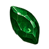
Tear of Anguish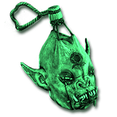
The Maiden's Censer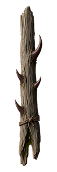
The Maiden's Thorn+2
Where you find it
- Sigil of AnguishEcho of Andariel · Echo of Andariel (II) · Hell · 5%
What the fight drops


Echo of the TombBand III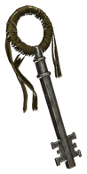
Sigil of PainEcho of Duriel · Echo of Duriel (III) · Hell · 5%Echo of Duriel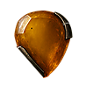
Marrow of Pain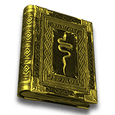
Duriel's Fetter The Bell of Bone
The Bell of Bone
Echo of the SanctumBand IV Sigil of TerrorEcho of Diablo · Hell · 5%Echo of Diablo
Sigil of TerrorEcho of Diablo · Hell · 5%Echo of Diablo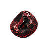
Terror's Brand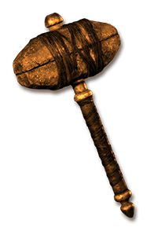
Hephasto's Last Strike The Unbound Page
The Unbound Page
Echo of the WorldstoneBand V Sigil of DestructionEcho of Baal · Hell · 5%Echo of Baal
Sigil of DestructionEcho of Baal · Hell · 5%Echo of Baal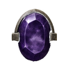
Ash of Destruction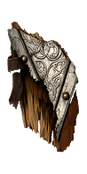
Spoils of the Siege Storm Brood+1
Storm Brood+1

The Black Abyss Mephisto's Gall
Mephisto's Gall Andariel's Venom Sac
Andariel's Venom Sac Duriel's Mandible
Duriel's Mandible Diablo's Spine
Diablo's Spine Baal's TentacleEcho of Mephisto (I) · Hell · 85%Echo of Andariel · Echo of Andariel (II) · Hell · 85%Mephisto, Hatred UnbornAndariel, Anguish UnbornDuriel, Pain UnbornDiablo, Terror UnbornBaal, Destruction Unborn
Baal's TentacleEcho of Mephisto (I) · Hell · 85%Echo of Andariel · Echo of Andariel (II) · Hell · 85%Mephisto, Hatred UnbornAndariel, Anguish UnbornDuriel, Pain UnbornDiablo, Terror UnbornBaal, Destruction Unborn Worldstone Remnant
Worldstone Remnant Litany of Tathamet
Litany of Tathamet Facet of the Prime Evils+10
Facet of the Prime Evils+10
Where you find them
- Mephisto's GallEcho of Mephisto (I) · Hell · 85%
- Andariel's Venom SacEcho of Andariel · Echo of Andariel (II) · Hell · 85%
- Duriel's MandibleEcho of Duriel · Echo of Duriel (III) · Hell · 85%
- Diablo's SpineEcho of Diablo · Hell · 85%
- Baal's TentacleEcho of Baal · Hell · 85%
What the fight drops


Legacy ubers
PandemoniumOne of three fights Key of TerrorKey of HateKey of DestructionTerror Zone act bosses · The Countess · Hell · 7.14%Terror Zone act bosses · The Summoner · Hell · 8.615%Lilith Matron's DenUber Duriel Forgotten SandsUber Izual Furnace of Pain
Key of TerrorKey of HateKey of DestructionTerror Zone act bosses · The Countess · Hell · 7.14%Terror Zone act bosses · The Summoner · Hell · 8.615%Lilith Matron's DenUber Duriel Forgotten SandsUber Izual Furnace of Pain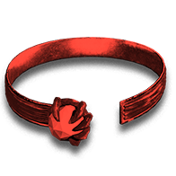
Lilith's Gaze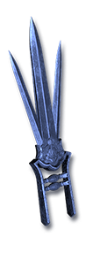
Izual's Betrayal
Where you find them
- Key of TerrorTerror Zone act bosses · The Countess · Hell · 7.14%
- Key of HateTerror Zone act bosses · The Summoner · Hell · 8.615%
- Key of DestructionNihlathak · Terror Zone act bosses · Hell · 7.932%
What the fight drops
Uber Tristram Diablo's Horn
Diablo's Horn Baal's Eye
Baal's Eye Mephisto's BrainLilith · Hell · 100%Uber Duriel · Hell · 100%Uber Mephisto TristramUber Diablo TristramUber Baal Tristram
Mephisto's BrainLilith · Hell · 100%Uber Duriel · Hell · 100%Uber Mephisto TristramUber Diablo TristramUber Baal Tristram Mephisto's Hatred
Mephisto's Hatred Hellfire Torch
Hellfire Torch Diablo's Terror+1
Diablo's Terror+1
Where you find them
- Diablo's HornLilith · Hell · 100%
- Baal's EyeUber Duriel · Hell · 100%
- Mephisto's BrainUber Izual · Hell · 100%
What the fight drops
The Unsealed Sanctuary Pentagram of Chaos3×The Stone of JordanEcho of Diablo · Hell · 5%Plain monsters · Normal · 0.00003136% (1 in 3,189,186) · 0% magic find; Plain monsters · Nightmare · 0.00003155% (1 in 3,170,060) · 0% magic find; Plain monsters · Hell · 0.00002028% (1 in 4,930,688) · 0% magic find · earliest drop: Normal, Act IShade of Diablo
Pentagram of Chaos3×The Stone of JordanEcho of Diablo · Hell · 5%Plain monsters · Normal · 0.00003136% (1 in 3,189,186) · 0% magic find; Plain monsters · Nightmare · 0.00003155% (1 in 3,170,060) · 0% magic find; Plain monsters · Hell · 0.00002028% (1 in 4,930,688) · 0% magic find · earliest drop: Normal, Act IShade of Diablo Annihilus
Annihilus
Where you find them
- Pentagram of ChaosEcho of Diablo · Hell · 5%
- The Stone of JordanPlain monsters · Normal · 0.00003136% (1 in 3,189,186) · 0% magic find; Plain monsters · Nightmare · 0.00003155% (1 in 3,170,060) · 0% magic find; Plain monsters · Hell · 0.00002028% (1 in 4,930,688) · 0% magic find · earliest drop: Normal, Act I
What the fight drops
Heaven
Court of Sin Seal of SinStone bosses, tiers XIII–XV · Hell · 4%Avatar of Azmodan
Seal of SinStone bosses, tiers XIII–XV · Hell · 4%Avatar of Azmodan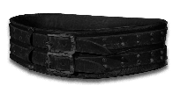
The Unsated Cord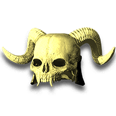
Death-Mask of UrehBane of Dubhdroiacht+48
Where you find it
- Seal of SinStone bosses, tiers XIII–XV · Hell · 4%
What the fight drops
The Unsated CordDeath-Mask of UrehBane of Dubhdroiacht Hellebore
Hellebore Snowdrop
Snowdrop Nightshade
Nightshade Thunderwort
Thunderwort Moonwort
Moonwort Mandrake
Mandrake Wolfsbane
Wolfsbane Pyrebrand
Pyrebrand Winter's Ruin
Winter's Ruin Skyfall
Skyfall Plague's Harvest
Plague's Harvest Death's Due
Death's Due Heaven's Sunder
Heaven's Sunder Final Sentence
Final Sentence Damnation
Damnation Last BetrayalPyrebrand (Spell level 20)Pyrebrand (Spell level 24)Winter's Ruin (Spell level 20)Winter's Ruin (Spell level 24)Skyfall (Spell level 20)Skyfall (Spell level 24)Plague's Harvest (Spell level 20)Plague's Harvest (Spell level 24)Death's Due (Spell level 20)Death's Due (Spell level 24)Heaven's Sunder (Spell level 20)Heaven's Sunder (Spell level 24)Final Sentence (Spell level 20)Final Sentence (Spell level 24)Damnation (Spell level 20)Damnation (Spell level 24)Last Betrayal (Spell level 20)Last Betrayal (Spell level 24)
Last BetrayalPyrebrand (Spell level 20)Pyrebrand (Spell level 24)Winter's Ruin (Spell level 20)Winter's Ruin (Spell level 24)Skyfall (Spell level 20)Skyfall (Spell level 24)Plague's Harvest (Spell level 20)Plague's Harvest (Spell level 24)Death's Due (Spell level 20)Death's Due (Spell level 24)Heaven's Sunder (Spell level 20)Heaven's Sunder (Spell level 24)Final Sentence (Spell level 20)Final Sentence (Spell level 24)Damnation (Spell level 20)Damnation (Spell level 24)Last Betrayal (Spell level 20)Last Betrayal (Spell level 24) Brood of Embers
Brood of Embers
HelleboreSnowdrop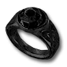
Ring of Borrowed Sins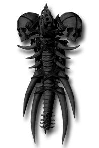
Azmodan's LegionNightshadeThunderwortMoonwortMandrakeWolfsbane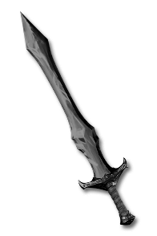
Arreat's DefiancePyrebrandWinter's RuinSkyfallPlague's HarvestDeath's DueHeaven's SunderFinal SentenceDamnationLast BetrayalPyrebrand (Spell level 20)Pyrebrand (Spell level 24)Winter's Ruin (Spell level 20)Winter's Ruin (Spell level 24)Skyfall (Spell level 20)Skyfall (Spell level 24)Plague's Harvest (Spell level 20)Plague's Harvest (Spell level 24)Death's Due (Spell level 20)Death's Due (Spell level 24)Heaven's Sunder (Spell level 20)Heaven's Sunder (Spell level 24)Final Sentence (Spell level 20)Final Sentence (Spell level 24)Damnation (Spell level 20)Damnation (Spell level 24)Last Betrayal (Spell level 20)Last Betrayal (Spell level 24)Brood of Embers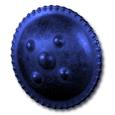
Stormline GuardStormline Binding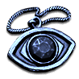
Stormline Token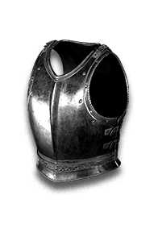
Heldfast Hauberk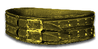
Heldfast GirdleHeldfast Torc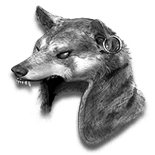
Spring's Kindling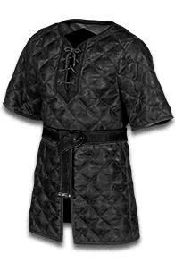
Summer's MantleAutumn's Grasp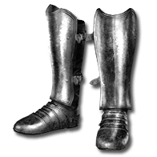
Winter's TreadHall of Lies Seal of LiesStone bosses, tiers XIII–XV · Hell · 4%Avatar of BelialThe Whispered FeverDeath-Mask of UrehBane of Dubhdroiacht+40
Seal of LiesStone bosses, tiers XIII–XV · Hell · 4%Avatar of BelialThe Whispered FeverDeath-Mask of UrehBane of Dubhdroiacht+40
Where you find it
- Seal of LiesStone bosses, tiers XIII–XV · Hell · 4%
What the fight drops
The Whispered FeverDeath-Mask of UrehBane of DubhdroiachtHelleboreSnowdropNightshadeThunderwortMoonwortMandrakeWolfsbanePyrebrandWinter's RuinSkyfallPlague's HarvestDeath's DueHeaven's SunderFinal SentenceDamnationLast BetrayalPyrebrand (Spell level 20)Pyrebrand (Spell level 24)Winter's Ruin (Spell level 20)Winter's Ruin (Spell level 24)Skyfall (Spell level 20)Skyfall (Spell level 24)Plague's Harvest (Spell level 20)Plague's Harvest (Spell level 24)Death's Due (Spell level 20)Death's Due (Spell level 24)Heaven's Sunder (Spell level 20)Heaven's Sunder (Spell level 24)Final Sentence (Spell level 20)Final Sentence (Spell level 24)Damnation (Spell level 20)Damnation (Spell level 24)Last Betrayal (Spell level 20)Last Betrayal (Spell level 24) The Unforgotten Sister
The Unforgotten Sister
HelleboreSnowdrop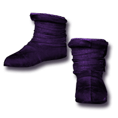
The Liar's Second Self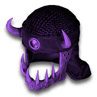
Mask of False IntentNightshadeThunderwortMoonwortMandrakeWolfsbanePyrebrandWinter's RuinSkyfallPlague's HarvestDeath's DueHeaven's SunderFinal SentenceDamnationLast BetrayalPyrebrand (Spell level 20)Pyrebrand (Spell level 24)Winter's Ruin (Spell level 20)Winter's Ruin (Spell level 24)Skyfall (Spell level 20)Skyfall (Spell level 24)Plague's Harvest (Spell level 20)Plague's Harvest (Spell level 24)Death's Due (Spell level 20)Death's Due (Spell level 24)Heaven's Sunder (Spell level 20)Heaven's Sunder (Spell level 24)Final Sentence (Spell level 20)Final Sentence (Spell level 24)Damnation (Spell level 20)Damnation (Spell level 24)Last Betrayal (Spell level 20)Last Betrayal (Spell level 24)The Unforgotten Sister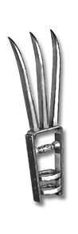
Hratli's Trigger-Claw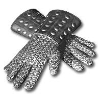
Hratli's Steady Hands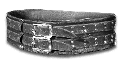
Hratli's Tool BeltOssuary of the Bonebound Seal of BoneStone bosses, tiers XIII–XV · Hell · 4%Vardek the BoneboundSevra the Bonebound
Seal of BoneStone bosses, tiers XIII–XV · Hell · 4%Vardek the BoneboundSevra the Bonebound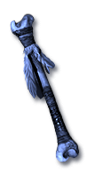
Rod of the BoneboundDeath-Mask of UrehBane of Dubhdroiacht+50
Where you find it
- Seal of BoneStone bosses, tiers XIII–XV · Hell · 4%
What the fight drops
Rod of the BoneboundDeath-Mask of UrehBane of DubhdroiachtHelleboreSnowdropNightshadeThunderwortMoonwortMandrakeWolfsbanePyrebrandWinter's RuinSkyfallPlague's HarvestDeath's DueHeaven's SunderFinal SentenceDamnationLast BetrayalPyrebrand (Spell level 20)Pyrebrand (Spell level 24)Winter's Ruin (Spell level 20)Winter's Ruin (Spell level 24)Skyfall (Spell level 20)Skyfall (Spell level 24)Plague's Harvest (Spell level 20)Plague's Harvest (Spell level 24)Death's Due (Spell level 20)Death's Due (Spell level 24)Heaven's Sunder (Spell level 20)Heaven's Sunder (Spell level 24)Final Sentence (Spell level 20)Final Sentence (Spell level 24)Damnation (Spell level 20)Damnation (Spell level 24)Last Betrayal (Spell level 20)Last Betrayal (Spell level 24) The Unerring FlightOssuary Visage
The Unerring FlightOssuary Visage Crown of the Vigil
Crown of the Vigil Bulwark of Devotion
Bulwark of Devotion Gauntlets of Penance
Gauntlets of Penance Pilgrim's Last Road
Pilgrim's Last Road
HelleboreSnowdrop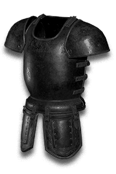
The Riven Mail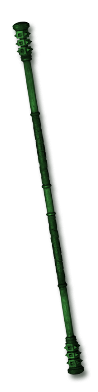
Bough of the BoneboundNightshadeThunderwortMoonwortMandrakeWolfsbanePyrebrandWinter's RuinSkyfallPlague's HarvestDeath's DueHeaven's SunderFinal SentenceDamnationLast BetrayalPyrebrand (Spell level 20)Pyrebrand (Spell level 24)Winter's Ruin (Spell level 20)Winter's Ruin (Spell level 24)Skyfall (Spell level 20)Skyfall (Spell level 24)Plague's Harvest (Spell level 20)Plague's Harvest (Spell level 24)Death's Due (Spell level 20)Death's Due (Spell level 24)Heaven's Sunder (Spell level 20)Heaven's Sunder (Spell level 24)Final Sentence (Spell level 20)Final Sentence (Spell level 24)Damnation (Spell level 20)Damnation (Spell level 24)Last Betrayal (Spell level 20)Last Betrayal (Spell level 24)The Unerring FlightOssuary Visage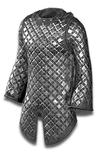
Ossuary Weave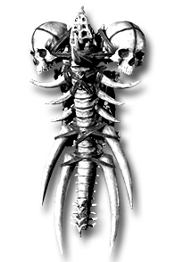
Ossuary Ward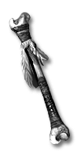
Ossuary Wand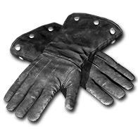
Ossuary Grasp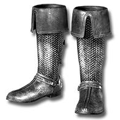
Ossuary Tread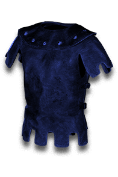
CirclehideCircle Tooth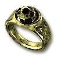
Circle VowCrown of the VigilBulwark of DevotionGauntlets of PenancePilgrim's Last RoadThrone of the Warlord Seal of BloodStone bosses, tiers XIII–XV · Hell · 4%Shade of Bartuc
Seal of BloodStone bosses, tiers XIII–XV · Hell · 4%Shade of Bartuc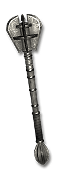
Rod of the High Council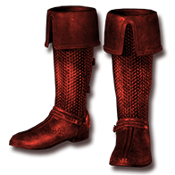
BloodwadeDeath-Mask of Ureh+51
Where you find it
- Seal of BloodStone bosses, tiers XIII–XV · Hell · 4%
What the fight drops
Rod of the High CouncilBloodwadeDeath-Mask of UrehBane of DubhdroiachtHelleboreSnowdropNightshadeThunderwortMoonwortMandrakeWolfsbanePyrebrandWinter's RuinSkyfallPlague's HarvestDeath's DueHeaven's SunderFinal SentenceDamnationLast BetrayalPyrebrand (Spell level 20)Pyrebrand (Spell level 24)Winter's Ruin (Spell level 20)Winter's Ruin (Spell level 24)Skyfall (Spell level 20)Skyfall (Spell level 24)Plague's Harvest (Spell level 20)Plague's Harvest (Spell level 24)Death's Due (Spell level 20)Death's Due (Spell level 24)Heaven's Sunder (Spell level 20)Heaven's Sunder (Spell level 24)Final Sentence (Spell level 20)Final Sentence (Spell level 24)Damnation (Spell level 20)Damnation (Spell level 24)Last Betrayal (Spell level 20)Last Betrayal (Spell level 24) Ashwalker's Due
Ashwalker's Due Fork of the Storm
Fork of the Storm Stillpoint Coronet
Stillpoint Coronet Hush of the Wyrm
Hush of the Wyrm Coil of Patience
Coil of Patience
HelleboreSnowdrop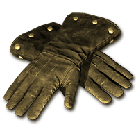
Grasp of TravincalNightshadeThunderwortMoonwortMandrakeWolfsbane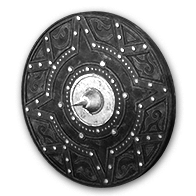
Wall of the Mage-ClansPyrebrandWinter's RuinSkyfallPlague's HarvestDeath's DueHeaven's SunderFinal SentenceDamnationLast BetrayalPyrebrand (Spell level 20)Pyrebrand (Spell level 24)Winter's Ruin (Spell level 20)Winter's Ruin (Spell level 24)Skyfall (Spell level 20)Skyfall (Spell level 24)Plague's Harvest (Spell level 20)Plague's Harvest (Spell level 24)Death's Due (Spell level 20)Death's Due (Spell level 24)Heaven's Sunder (Spell level 20)Heaven's Sunder (Spell level 24)Final Sentence (Spell level 20)Final Sentence (Spell level 24)Damnation (Spell level 20)Damnation (Spell level 24)Last Betrayal (Spell level 20)Last Betrayal (Spell level 24)Ashwalker's DueFork of the Storm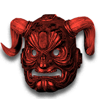
Bartuc's Horned Visage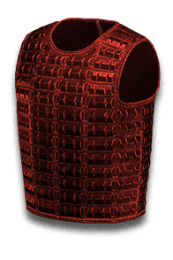
Bartuc's Blood-Harness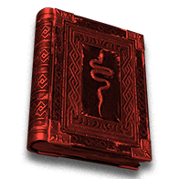
Bartuc's Book of Legions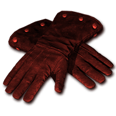
Bartuc's Binding GlovesBartuc's War-GirdleBartuc's Blood-SigilStillpoint CoronetHush of the WyrmCoil of Patience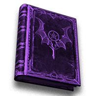
The First Seal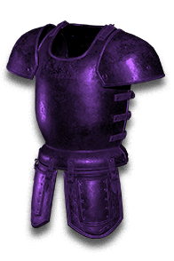
The Second Seal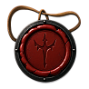
The Third SealKulle's Last Door Seal of SandStone bosses, tiers XIII–XV · Hell · 4%Shade of Zoltun KulleNor Tiraj's TrekDeath-Mask of UrehBane of Dubhdroiacht+60
Seal of SandStone bosses, tiers XIII–XV · Hell · 4%Shade of Zoltun KulleNor Tiraj's TrekDeath-Mask of UrehBane of Dubhdroiacht+60
Where you find it
- Seal of SandStone bosses, tiers XIII–XV · Hell · 4%
What the fight drops
Nor Tiraj's TrekDeath-Mask of UrehBane of DubhdroiachtHelleboreSnowdropThe Ceaseless TalonThe Stilled HourNightshadeThunderwortMoonwortMandrakeWolfsbaneRing of the Broken StoneZoltun's Last LessonViz-Jaq'taar Blade-ClawKulle's Halted SandPyrebrandWinter's RuinSkyfallPlague's HarvestDeath's DueHeaven's SunderFinal SentenceDamnationLast BetrayalPyrebrand (Spell level 20)Pyrebrand (Spell level 24)Winter's Ruin (Spell level 20)Winter's Ruin (Spell level 24)Skyfall (Spell level 20)Skyfall (Spell level 24)Plague's Harvest (Spell level 20)Plague's Harvest (Spell level 24)Death's Due (Spell level 20)Death's Due (Spell level 24)Heaven's Sunder (Spell level 20)Heaven's Sunder (Spell level 24)Final Sentence (Spell level 20)Final Sentence (Spell level 24)Damnation (Spell level 20)Damnation (Spell level 24)Last Betrayal (Spell level 20)Last Betrayal (Spell level 24) Snarekeeper's TreadAnvilbrow
Snarekeeper's TreadAnvilbrow Gale BinderViz-Jaq'taar CowlViz-Jaq'taar LeathersViz-Jaq'taar GraspViz-Jaq'taar Silent StepViz-Jaq'taar Oath-RingViz-Jaq'taar Mage-BaneCowl of the HoradrimVestment of the HoradrimHoradric WrapsHoradric WayfarersHoradric CordThe Horadrim's OathTwinned TalonsLocket of FadingRing of the Cast ShadowConcord FocusConcord Band
Gale BinderViz-Jaq'taar CowlViz-Jaq'taar LeathersViz-Jaq'taar GraspViz-Jaq'taar Silent StepViz-Jaq'taar Oath-RingViz-Jaq'taar Mage-BaneCowl of the HoradrimVestment of the HoradrimHoradric WrapsHoradric WayfarersHoradric CordThe Horadrim's OathTwinned TalonsLocket of FadingRing of the Cast ShadowConcord FocusConcord Band
HelleboreSnowdropThe Ceaseless TalonThe Stilled HourNightshadeThunderwortMoonwortMandrakeWolfsbaneRing of the Broken StoneZoltun's Last LessonViz-Jaq'taar Blade-ClawKulle's Halted SandPyrebrandWinter's RuinSkyfallPlague's HarvestDeath's DueHeaven's SunderFinal SentenceDamnationLast BetrayalPyrebrand (Spell level 20)Pyrebrand (Spell level 24)Winter's Ruin (Spell level 20)Winter's Ruin (Spell level 24)Skyfall (Spell level 20)Skyfall (Spell level 24)Plague's Harvest (Spell level 20)Plague's Harvest (Spell level 24)Death's Due (Spell level 20)Death's Due (Spell level 24)Heaven's Sunder (Spell level 20)Heaven's Sunder (Spell level 24)Final Sentence (Spell level 20)Final Sentence (Spell level 24)Damnation (Spell level 20)Damnation (Spell level 24)Last Betrayal (Spell level 20)Last Betrayal (Spell level 24)Snarekeeper's TreadAnvilbrowGale BinderViz-Jaq'taar CowlViz-Jaq'taar LeathersViz-Jaq'taar GraspViz-Jaq'taar Silent StepViz-Jaq'taar Oath-RingViz-Jaq'taar Mage-BaneCowl of the HoradrimVestment of the HoradrimHoradric WrapsHoradric WayfarersHoradric CordThe Horadrim's OathTwinned TalonsLocket of FadingRing of the Cast ShadowConcord FocusConcord BandThe Silver City Avatar's Claw
Avatar's Claw Eye of the Liar
Eye of the Liar Bound Knucklebones
Bound Knucklebones Council Remnant
Council Remnant Kulle's AshAvatar of Azmodan · Hell · 100%Avatar of Belial · Hell · 100%Echo of the Veiled Prophet
Kulle's AshAvatar of Azmodan · Hell · 100%Avatar of Belial · Hell · 100%Echo of the Veiled Prophet Anu's Radiance
Anu's Radiance The Cathedral's Mercy
The Cathedral's Mercy Inarius' Wing-Blade+11
Inarius' Wing-Blade+11
Where you find them
- Avatar's ClawAvatar of Azmodan · Hell · 100%
- Eye of the LiarAvatar of Belial · Hell · 100%
- Bound KnucklebonesVardek the Bonebound · Hell · 100%
- Council RemnantShade of Bartuc · Hell · 100%
- Kulle's AshShade of Zoltun Kulle · Hell · 100%
What the fight drops


New encounters
Gilded Vault Gilded KeySentinel champions · Hell · 16.64%25 Gilded FallenGoldAct 5 Hell weapons and armor (A)Rings, amulets, jewels, charms, gems, and runes+2
Gilded KeySentinel champions · Hell · 16.64%25 Gilded FallenGoldAct 5 Hell weapons and armor (A)Rings, amulets, jewels, charms, gems, and runes+2
Where you find it
- Gilded KeySentinel champions · Hell · 16.64%. Defiled Shrines in Stone tiers V, VI, VII, VIII, IX, X, XI, XII, XIII, XIV, XV
What the fight drops
GoldAct 5 Hell weapons and armor (A)Rings, amulets, jewels, charms, gems, and runesrunescrafting reagent pool
Horadric Vault Horadric Vault SigilStone bosses, tiers IV–XII · Hell · 3.333%The Gilded Wretch
Horadric Vault SigilStone bosses, tiers IV–XII · Hell · 3.333%The Gilded Wretch
Where you find it
- Horadric Vault SigilStone bosses, tiers IV–XII · Hell · 3.333%